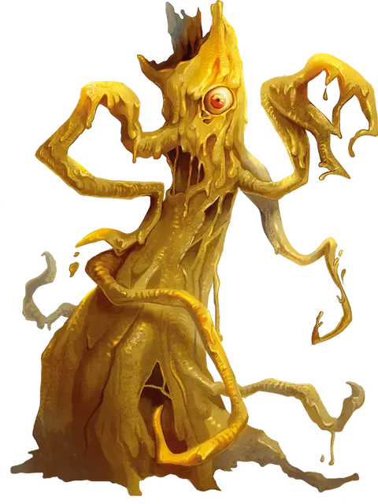

Йоклол
Yochlol
Среднее Исчадие (Демон, Перевертыш), хаотично-злое

Класс Доспеха 15 (природный доспех)
Хиты 136 (16к8 + 64)
Скорость 30 футов, лазая 30 футов
| мод | спас | ||
|---|---|---|---|
| СИЛ | 15 | +2 | +2 |
| ЛОВ | 14 | +2 | +2 |
| ТЕЛ | 18 | +4 | +4 |
| мод | спас | ||
|---|---|---|---|
| ИНТ | 13 | +1 | +1 |
| МДР | 15 | +2 | +2 |
| ХАР | 15 | +2 | +2 |
Навыки Обман +10, Проницательность +6
Сопротивление урону огонь, холод, электричество; дробящий, колющий, рубящий от немагических атак
Иммунитет к урону яд
Иммунитет к состояниям отравление
Чувства тёмное зрение 120 футов, пассивное Восприятие 12
Языки Бездны, Подземный, Эльфийский
Опасность 10 (5900 опыта)
Бонус мастерства +4
Особенности
Перевёртыш. Йоклол может действием принять облик, напоминающий женщину дроу или громадного паука, или принять свой истинный облик. Во всех обликах её статистика остаётся той же самой. Всё несомое и носимое ей снаряжение не превращается. Она принимает свой истинный облик, если умирает.
Сопротивление магии. Йоклол совершает с преимуществом спасброски от заклинаний и прочих магических эффектов.
Паучье лазание. Йоклол может лазать по сложным поверхностям, включая потолки, без совершения проверок характеристик.
Врождённое колдовство. Базовой характеристикой йоклол является Харизма (Сл спасброска от заклинания 14). Йоклол может накладывать следующие заклинания, не нуждаясь в материальных компонентах:
• Неограниченно: обнаружение мыслей [detect thoughts], паутина [web];
• 1/день: подчинение личности [dominate person].
Хождение по паутине. Йоклол игнорирует ограничения перемещения, вызванные паутиной.
Вариант: Призыв демона. У некоторых демонов может быть действие, позволяющее им призывать других демонов.
Призыв демона (1/день). Демон выбирает, кого призвать, и пытается это сделать. Йоклол получает 50% шанс призыва одной йоклол [yochlol].
Призванный демон появляется в свободном пространстве в пределах 60 футов от призывателя, и действует как его союзник, не имеющий способности призывать демонов. Он призывается на 1 минуту или пока призыватель не умрёт или действием его не отпустит.
Действия
Мультиатака. Йоклол совершает две рукопашные атаки.
Размашистый удар (в облике паука Укус). Рукопашная атака оружием: +6 к попаданию, досягаемость 5 футов (10 футов в облике демона), одна цель. Попадание: Дробящий (колющий в облике паука) урон 5 (1к6 + 2) плюс урон ядом 21 (6к6).
Туманный облик. Йоклол становится токсичным туманом или возвращается в свой истинный облик. Всё снаряжение, которое она несёт и носит, превращается вместе с ней. Она принимает свой истинный облик, если умирает.
Находясь в туманном облике, йоклол недееспособна, и не может говорить. Она обладает скоростью полёта 30 футов, может парить, и может проходить сквозь любое пространство, если оно не герметично. Она совершает с преимуществом спасброски Силы, Ловкости и Телосложения, и обладает иммунитетом к немагическому урону.
Находясь в туманном облике, йоклол может входить в пространство существ и останавливаться там. Каждый раз, когда существо начинает ход, разделяя с йоклол пространство, оно должны преуспеть в спасброске Телосложения Сл 14, иначе станет отравленным до начала своего следующего хода. Будучи отравленной таким образом, цель является недееспособной.
Описание
Йоклол, Прислужницы Лолс, действующие по воле Королевы Пауков, это её шпионы, надсмотрщики и агенты зла. Они всегда подле неё в Ямах Демонической Паутины, но иногда Лолс отправляет их на Материальный План для защиты храмов и помощи особо привилегированным жрицам. Йоклол не рождаются вне царства Лолс, и не служат никаким демоническим повелителям кроме своей королевы.
Вне Бездны, чтобы скрыть демоническую натуру, йоклол может принять вид женщины дроу или чудовищного паука. Истинный её облик — столб жёлтой слизи с единственным злобным глазом. В истинном облике и в облике дроу касание йоклол жалит ядом так же, как и укус её паучьего облика.
См. дополнительно статью: "Бестиарий: Демоны"